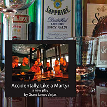

performance archive28bars Productions and Other Side Productions in association with The Wild Project present Accidentally, Like A Martyr a new play by Grant James Varjas |
New York, NY (May 4, 2010) – 28bars Productions and Other Side Productions are proud to present a special limited run, in honor and celebration of Gay Pride Week in New York, of “Accidentally, Like A Martyr.” The new play, written and directed by Grant James Varjas, will run for five performances only, June 23-26 at the Wild Project, 195 East 3rd Street (between Avenues A and B). “Accidentally, Like A Martyr” takes place in a gay bar on the Lower East Side of Manhattan, where a group of men from different backgrounds and generations talk, joke and drink their way through a slow and lonely winter evening. Old secrets are revealed and old wounds re-opened in a serio-comic play inspired and influenced by Mart Crowley’s “The Boys in the Band” and Tennessee Williams’s “Small Craft Warnings.” “Accidentally, Like A Martyr” is a funny and poignant look at gay men growing older in the new century. The cast will include Keith McDermott, Grant James Varjas, Chuck Blasius, Ken Forman, Joe MacDougall and Philip Taratula (“The Lily’s Revenge”). Grant James Varjas is the writer and composer of the GLAAD (Gay And Lesbian Alliance Against Defamation) nominated play with music “33 To Nothing,” which was directed by Randal Myler (“Love, Janis”) in a much-acclaimed Off-Broadway production in New York City. He is a member of the Tectonic Theatre Company where he has collaborated with Moises Kaufman on various projects as a writer and actor, ranging from the film version of “The Laramie Project” to the recent play “33 Variations.” He has acted in numerous Off and Off Off Broadway productions, on television (including “Sex And The City” and “Law and Order: Criminal Intent”) and in the upcoming film “Peter And Vandy” (Strand Releasing). Grant attended the American Academy of Dramatic Arts in NYC, and has studied with Tom Noonan. For more information, please visit www.othersideproductions.org |
showtimes:WED - FRI, JUNE 23-25 @ 8 PM SAT, JUNE 26 @ 2 PM & 8 PM tickets:Ticket sales is closed. |
upcoming performances |
|||
 |
|||
| EVQ Film Festival 2018 August 20-25 |
|||
performance archives |
|||
| 2018 | 2017 | 2016 | 2015 |
| 2014 | 2013 | 2012 | 2011 |
| 2010 | 2009 | 2008 | 2007 |